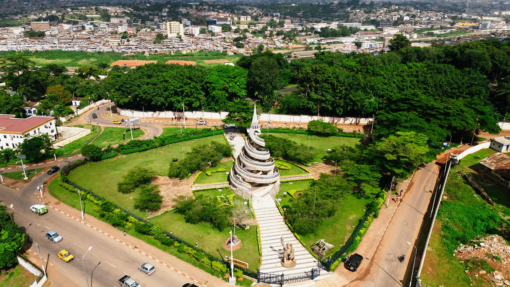
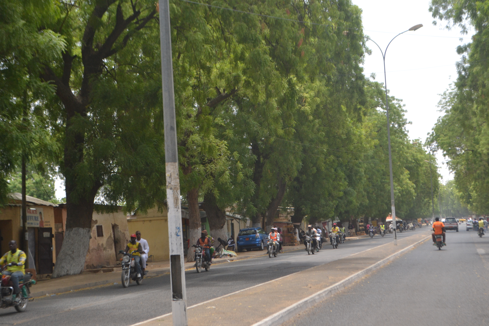
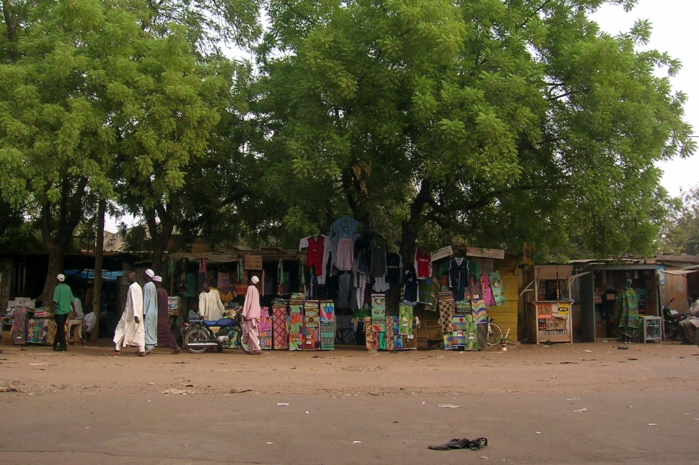
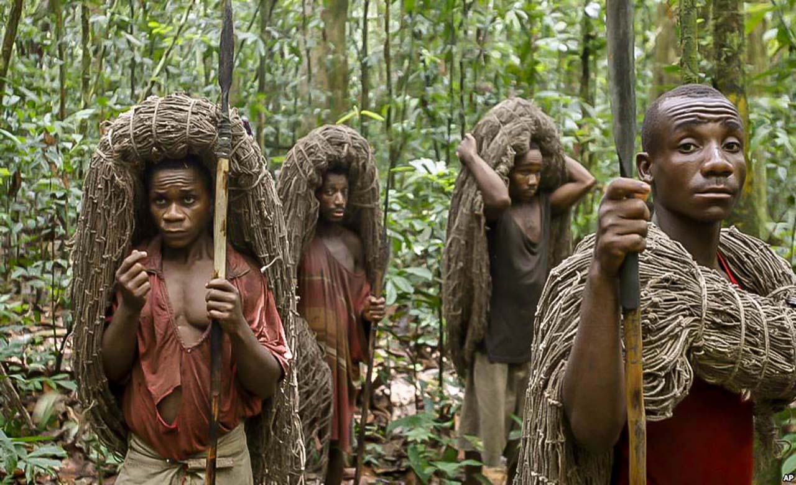
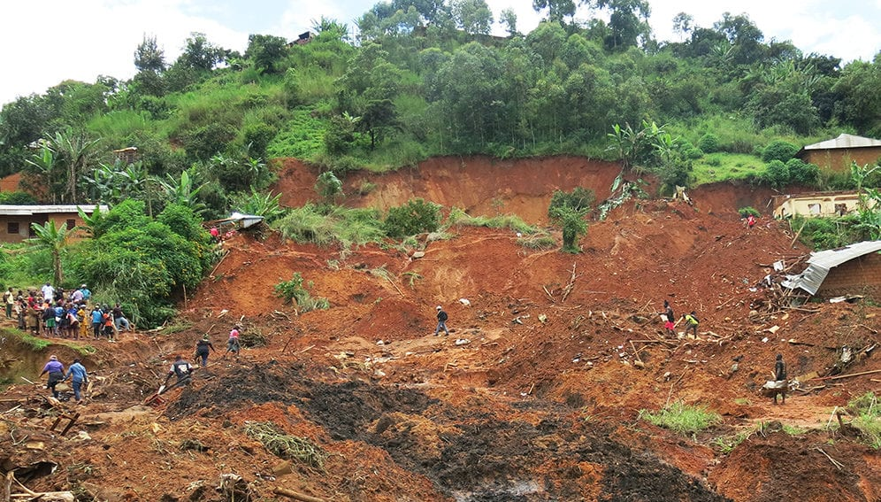

Bases
Notre présence au Cameroun en 2023 est marquée par six bureaux dont :
un bureau de coordination à Yaoundé (Centre), trois bases à Maroua
(Extrême-Nord), Batouri (Est) et Bafoussam (Ouest), ainsi que trois
sous bureaux dédiés au projet Fond Mondial (FM) à Yaoundé (au bureau
central), Douala (Littoral) et Garoua (Nord)..
Source et Images © Care
Yaoundé
Yaoundé, souvent appelé Ongola en béti, langue de l'ethnie autochtone, la « ville aux sept collines/montagnes », est la capitale politique du Cameroun. Peuplée de 2 765 000 d'habitants en 20152, elle est, avec Douala, la ville la plus peuplée de cet État et de la zone CEMAC.
Maroua
La ville de Maroua est le chef-lieu de la région de l'Extrême-Nord du Cameroun et du département du Diamaré. La Communauté urbaine de Maroua instaurée en 2008 est constituée de trois communes d'arrondissement1 avec une population urbaine estimée à plus de 300 000 habitants en 2022. Certaines sources contestent ce chiffre et estiment plutôt que sa population atteindrait le million (1 070 000).
Garoua
Garoua est la capitale de la région du Nord du Cameroun et le chef-lieu du département de la Bénoué. Elle a été érigée en Communauté urbaine de Garoua en 20082. La population est estimée à 361 000 habitants en 2022, soit la troisième ville du pays. Elle était l'une des premières villes du Cameroun avant la colonisation et était la capitale régionale du Grand-nord jusqu'en 1982. La langue principale d'échange de la ville est le Fulfuldé.
Bertoua
Bertoua est une commune du Cameroun située dans le département du Lom-et-Djérem et la région de l'Est, érigée en Communauté urbaine de Bertoua en 20081. La ville de se trouve à 350 km de Yaoundé. Bertoua est la capitale régionale de l'Est, la plus grande région forestière du Cameroun.
Bafoussam
Bafoussam, ou Fussep en langue locale, est une ville du Cameroun, chef-lieu du département de la Mifi et de la région de l'Ouest. Elle a le statut de Communauté urbaine depuis 2008, constituée de trois communes d'arrondissement1. Agglomération la plus importante du pays Bamiléké, elle est l'une des dix villes du Cameroun les plus peuplées, à la fois ville et village du peuple du même nom.